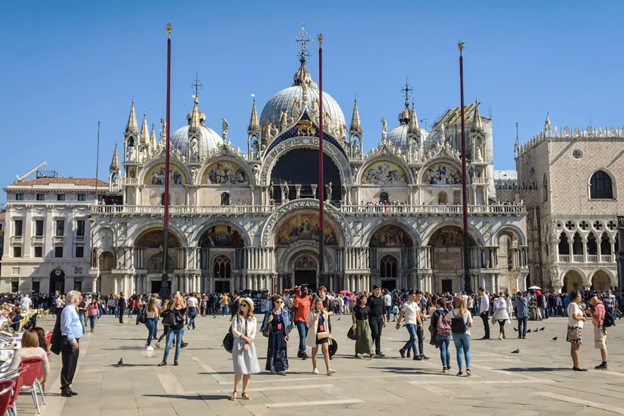
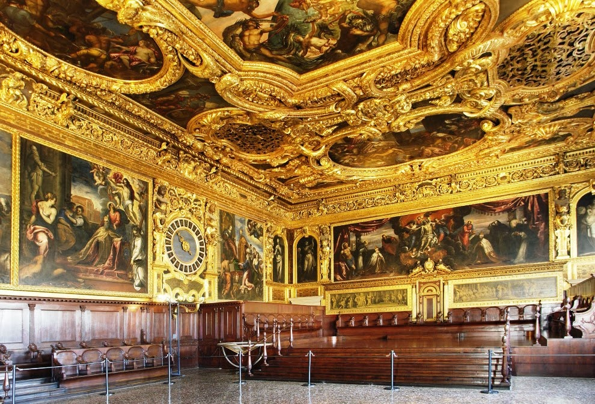
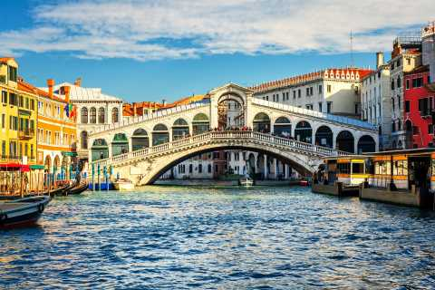
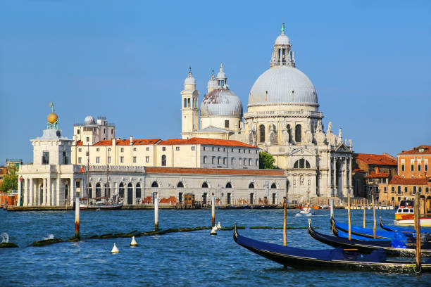
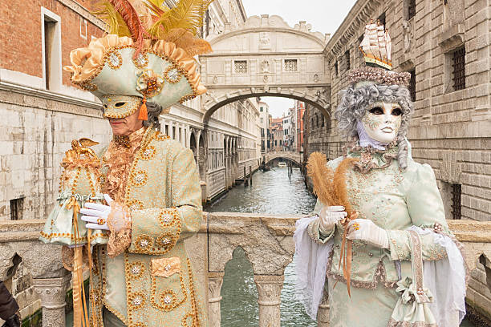
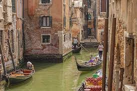
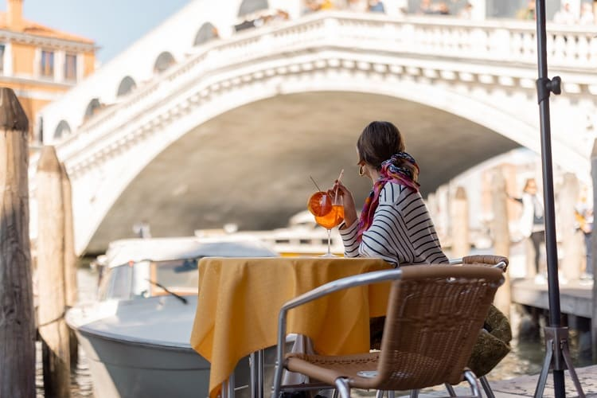

Cidades da Itália para Conhecer
Para você que gostaria de conhecer novas cidades e cuturas, irei te apresentar A famosa Veneza.
Veneza, Itália
Veneza, a "Cidade das Águas", é uma das cidades mais encantadoras e únicas do mundo, conhecida por seus canais sinuosos, arquitetura magnífica e rica história. Localizada no nordeste da Itália, Veneza é um destino que cativa os visitantes com sua atmosfera romântica e charme inigualável.
Pontos Turísticos:
- Praça de São Marcos (Piazza San Marco): O coração pulsante da cidade, cercado por impressionantes edifícios renascentistas. Destacam-se a Basílica de São Marcos e o Campanário de São Marcos. 
- Palácio Ducal (Palazzo Ducale): Uma obra-prima da arquitetura gótica, este palácio foi a residência dos doges venezianos e abriga inúmeras obras de arte. 
- Ponte Rialto: Uma das pontes mais famosas do mundo, oferece vistas espetaculares do Grande Canal e abriga diversas lojas tradicionais. 
- Basilica di Santa Maria della Salute: Uma igreja barroca que se destaca pela sua cúpula impressionante, oferecendo uma vista panorâmica de Veneza. 
Costumes e Culturas
Quando o assunto é cultura, a itália se encaixa muito bem, como o Carnaval de Veneza, famoso por suas máscaras elaboradas e desfiles extravagantes.
Se você quiser uma coisa mais romântica, veneza te proporciona o lindo passeio de Gôngolas, passearde gôngolas pelos canais é uma tradição romântica em Veneza.
E quando se fala de Itália, não tem como deixar a gastronômia de fora, Uma tradição italiana, o aperitivo em Veneza envolve saborear bebidas e petiscos em bares à beira dos canais antes do jantar.
Clima:
clima de Veneza é tipicamente temperado, com verões quentes e invernos amenos. Os meses de primavera e outono são ideais para visitar, evitando as multidões turísticas e aproveitando temperaturas agradáveis.